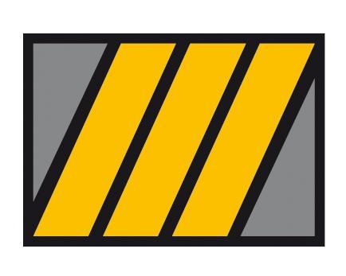

Agustin Lo Prete
Education
Universidad Torcuato Di Tella (2015 - 2019) 
Bachelor's Degree in Economics
Coder House (2022) 
SQL Problem Solving
Database Management
IT Skills
Excel - VBA
SQL
Javascript
HTML
CSS
TABLEAU
Languages
Spanish (Native)
English (Bilingual proficiency)
Italian (Professional working proficiency)
Portuguese (Professional working proficiency)
Work Experience
Decision Analytics Associate - ZS - (2021 - Present)
Pharmaceutical and Hotel Consulting Projects
Revenue Management for a prominent hotel chain in the United States
Data Analytics with SQL, Excel and VBA
Data Visualization with Tableau and Power Point
Transfer Pricing Analyst - EY Argentina - (2019 - 2021)
Latin America´s macroeconomic analysis and its direct impact on companies KPIs
Direct analysis of clients' financial statements to analyze and interpret their operations
Transfer Pricing studies elaboration
Direct contact with clients on different industries: Media, Insurance, CPG, among others